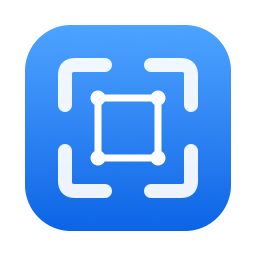
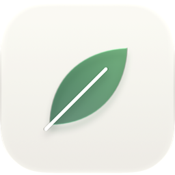
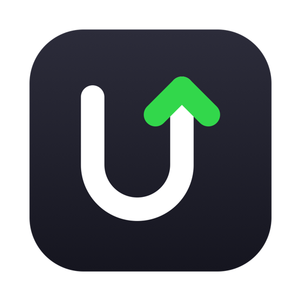

Small, free Mac apps.
Native, open source, no telemetry. Each one does one job well.

Clip
Screenshots, recording and OCR
Double-tap ⌘ to capture a region, mark it up, record it to MP4 or GIF, or copy the text in it. Nothing leaves your Mac.

Leaf
Kindle-style ebook reader
Double-click an EPUB, MOBI or AZW3 file to read it. No library, no account; close the window to quit.

Uptick
App updater, the MacUpdater successor
Finds updates for the apps you already have, checks every download, and installs it in one click.
SpoolChrome extension
Finds the videos a page loads and saves each one as a file: MP4, HLS, DASH, and bilibili at your account’s best quality.
LodestoneChrome extension
Lists the magnet links on a page, guesses what each one is, and copies or finds it in one click.
Why I build these
AI didn’t kill software. It let anyone build it.
Every app here had the same first user. Me.
Free stays free. Forever.
Felix, PM by day, builder by night